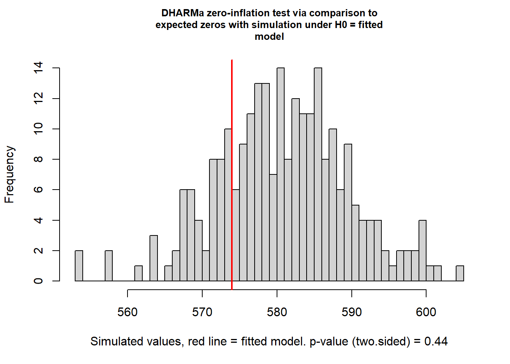
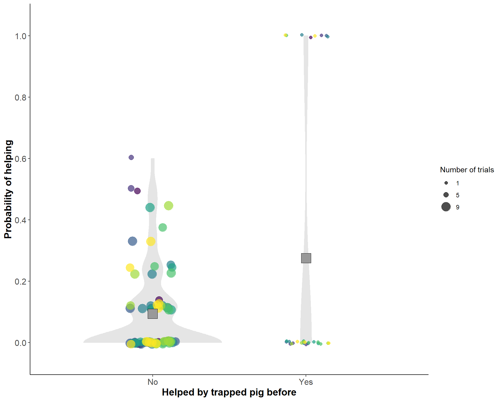

library(tidyverse) # tidy universe
library(viridis) # colors
library(glmmTMB) # neg. binomial model
library(performance) # model performance
library(DHARMa) # model diagnosticsLikelihood of helping - reciprocity
Libraries
set.seed(1989)Data
Data analysis from the point of view of the helping pigs.
Read data
dat <- read_csv("../data/reciproc-helping.csv")Rows: 638 Columns: 27
── Column specification ────────────────────────────────────────────────────────
Delimiter: ","
chr (11): trapped.pig.uniq.id, uniq.group, trial, pot.helper.uniq.id, relate...
dbl (16): group.trapped.pig.order, pot.helper.response, test.dur.look.s.per....
ℹ Use `spec()` to retrieve the full column specification for this data.
ℹ Specify the column types or set `show_col_types = FALSE` to quiet this message.Adjust data types
dat <- dat %>%
mutate_at(vars(pot.helper.helped.by.trapped.before,
trapped.before,
pretrial.open.yn,
pothelper.sex,
related,
pot.helper.uniq.id), ~as.factor(.)) %>%
mutate(group.trapped.pig.order.z = as.vector(scale(group.trapped.pig.order)))
str(dat)tibble [638 × 28] (S3: tbl_df/tbl/data.frame)
$ trapped.pig.uniq.id : chr [1:638] "DG2_F_3" "DG2_F_3" "DG2_F_3" "DG2_F_3" ...
$ uniq.group : chr [1:638] "DG2_F" "DG2_F" "DG2_F" "DG2_F" ...
$ trial : chr [1:638] "DG2_F3_070920" "DG2_F3_070920" "DG2_F3_070920" "DG2_F3_070920" ...
$ group.trapped.pig.order : num [1:638] 1 1 1 1 1 1 1 2 2 2 ...
$ pot.helper.uniq.id : Factor w/ 75 levels "DG2_F_2","DG2_F_3",..: 1 3 4 5 6 7 8 1 2 3 ...
$ pot.helper.response : num [1:638] 0 0 0 0 0 0 0 0 0 0 ...
$ related : Factor w/ 2 levels "No","Yes": 2 1 1 1 1 1 1 1 1 2 ...
$ pot.helper.helped.by.trapped.before: Factor w/ 2 levels "No","Yes": 1 1 1 1 1 1 1 1 1 1 ...
$ trapped.before : Factor w/ 2 levels "No","Yes": 1 1 1 1 1 1 1 1 2 1 ...
$ trapped.pig.helped.others.before : chr [1:638] "n" "n" "n" "n" ...
$ pothelper.sex : Factor w/ 2 levels "Female","Male": 1 2 2 1 2 2 1 1 1 2 ...
$ test.dur.look.s.per.min : num [1:638] 2.78 0 0 1.08 3.6 ...
$ pretrial.rate.curio.min : num [1:638] 0 0 0 0 0 ...
$ pretrial.open.yn : Factor w/ 2 levels "No","Yes": 1 1 1 1 1 1 1 1 1 1 ...
$ train.rate.curio.min : num [1:638] 0.417 0.675 0.433 0.383 0.442 ...
$ train.rate.open : num [1:638] 0.18333 0.04167 0.01667 0.00833 0.06667 ...
$ lat.helped.min : num [1:638] 20 NA NA 20 20 20 20 20 20 20 ...
$ test.dur.look.window : num [1:638] 55.7 NA NA 21.6 71.9 ...
$ test.count.look.window : num [1:638] 9 NA NA 4 11 0 1 2 2 6 ...
$ test.curios.score : num [1:638] 3 NA NA 0 4 0 1 0 0 2 ...
$ pretrial.curio.yn : num [1:638] 0 0 0 0 0 1 1 0 0 0 ...
$ trapped.pig.sow : num [1:638] 6232 6232 6232 6232 6232 ...
$ trapped.pig.sex : chr [1:638] "w" "w" "w" "w" ...
$ test.count.look.per.testmin : num [1:638] 0.45 0 0 0.2 0.55 0 0.05 0.1 0.1 0.3 ...
$ test.rate.curio.min : num [1:638] 0.15 0 0 0 0.2 0 0.05 0 0 0.1 ...
$ pretrial.rate.open.min : num [1:638] 0 0 0 0 0 0 0 0 0 0 ...
$ pothelper.mom : num [1:638] 6232 6235 6235 6235 5952 ...
$ group.trapped.pig.order.z : num [1:638] -1.53 -1.53 -1.53 -1.53 -1.53 ...Zero-inflated negative binomial model
The zero-inflation model describes the probability of observing an extra (i.e., structural) zero that is not generated by the conditional model.
- fit the model with zero-inflation is assumed to be constant across the data set (
ziformula = ~ 1), i.e., zero-inflation is independent of the predictor variables - chose
family = negbinom2, i.e., a negative binomial distribution in which the variance increases quadratically with the mean
Run full model
contr = glmmTMBControl(optimizer = optim, optArgs = list(method="BFGS"))mod <- glmmTMB(pot.helper.response ~
# fixed, continuous predictors
group.trapped.pig.order.z +
# fixed, categorical predictors
pot.helper.helped.by.trapped.before +
trapped.before +
pretrial.open.yn +
pothelper.sex +
related +
# random effects
(1|pot.helper.uniq.id),
# Negative binomial distribution
family = "nbinom2",
# expect zero-inflation equal in all obs
ziformula = ~ 1,
# data set
data = dat,
# numerical optimizer
control = contr)Run reduced model
mod.red <- glmmTMB(pot.helper.response ~
# fixed, continuous predictors
group.trapped.pig.order.z +
# fixed, categorical predictors
pretrial.open.yn +
pothelper.sex +
related +
# random effects
(1|pot.helper.uniq.id),
# Negative binomial distribution
family = "nbinom2",
# expect zero-inflation equal in all obs
ziformula = ~ 1,
# data set
data = dat,
# numerical optimizer
control = contr)Model comparison
- Likelihood ratio test compares goodness of fit of of the reduced and the full model, i.e., determine whether or not adding complexity (adding more parameters) makes the full model significantly more accurate
anova(mod.red, mod, test='Chisq')Data: dat
Models:
mod.red: pot.helper.response ~ group.trapped.pig.order.z + pretrial.open.yn + , zi=~1, disp=~1
mod.red: pothelper.sex + related + (1 | pot.helper.uniq.id), zi=~1, disp=~1
mod: pot.helper.response ~ group.trapped.pig.order.z + pot.helper.helped.by.trapped.before + , zi=~1, disp=~1
mod: trapped.before + pretrial.open.yn + pothelper.sex + related + , zi=~1, disp=~1
mod: (1 | pot.helper.uniq.id), zi=~1, disp=~1
Df AIC BIC logLik deviance Chisq Chi Df Pr(>Chisq)
mod.red 8 416.38 452.04 -200.19 400.38
mod 10 414.53 459.12 -197.27 394.53 5.8433 2 0.05384 .
---
Signif. codes: 0 '***' 0.001 '**' 0.01 '*' 0.05 '.' 0.1 ' ' 1Summary of model
summary(mod) Family: nbinom2 ( log )
Formula:
pot.helper.response ~ group.trapped.pig.order.z + pot.helper.helped.by.trapped.before +
trapped.before + pretrial.open.yn + pothelper.sex + related +
(1 | pot.helper.uniq.id)
Zero inflation: ~1
Data: dat
AIC BIC logLik deviance df.resid
414.5 459.1 -197.3 394.5 628
Random effects:
Conditional model:
Groups Name Variance Std.Dev.
pot.helper.uniq.id (Intercept) 0.6481 0.8051
Number of obs: 638, groups: pot.helper.uniq.id, 75
Dispersion parameter for nbinom2 family (): 5.23e+04
Conditional model:
Estimate Std. Error z value Pr(>|z|)
(Intercept) -2.1422 0.3301 -6.489 8.62e-11 ***
group.trapped.pig.order.z 0.1419 0.1787 0.794 0.42705
pot.helper.helped.by.trapped.beforeYes 1.1062 0.4201 2.633 0.00846 **
trapped.beforeYes -0.3217 0.3941 -0.816 0.41429
pretrial.open.ynYes 0.5855 0.4154 1.409 0.15869
pothelper.sexMale -0.6778 0.3400 -1.994 0.04619 *
relatedYes -0.4799 0.2775 -1.729 0.08373 .
---
Signif. codes: 0 '***' 0.001 '**' 0.01 '*' 0.05 '.' 0.1 ' ' 1
Zero-inflation model:
Estimate Std. Error z value Pr(>|z|)
(Intercept) -15.42 722.30 -0.021 0.983car::Anova(mod)Analysis of Deviance Table (Type II Wald chisquare tests)
Response: pot.helper.response
Chisq Df Pr(>Chisq)
group.trapped.pig.order.z 0.6308 1 0.427046
pot.helper.helped.by.trapped.before 6.9328 1 0.008463 **
trapped.before 0.6665 1 0.414286
pretrial.open.yn 1.9867 1 0.158691
pothelper.sex 3.9746 1 0.046192 *
related 2.9910 1 0.083729 .
---
Signif. codes: 0 '***' 0.001 '**' 0.01 '*' 0.05 '.' 0.1 ' ' 1Performance of model
performancepackage used to check model assumptions
performance::check_collinearity(mod)Warning: Could not get model data.# Check for Multicollinearity
* conditional component:
Low Correlation
Term VIF VIF 95% CI Increased SE
group.trapped.pig.order.z 1.94 [1.74, 2.18] 1.39
pot.helper.helped.by.trapped.before 1.13 [1.06, 1.27] 1.06
trapped.before 2.10 [1.88, 2.37] 1.45
pretrial.open.yn 1.02 [1.00, 1.84] 1.01
pothelper.sex 1.00 [1.00, 77064.96] 1.00
related 1.01 [1.00, 176.99] 1.00
Tolerance Tolerance 95% CI
0.52 [0.46, 0.57]
0.88 [0.79, 0.94]
0.48 [0.42, 0.53]
0.98 [0.54, 1.00]
1.00 [0.00, 1.00]
0.99 [0.01, 1.00]performance::check_overdispersion(mod)# Overdispersion test
dispersion ratio = 0.636
Pearson's Chi-Squared = 399.483
p-value = 1No overdispersion detected.DHARMapackage used to test for zero-inflation, which compares the distribution of expected zeros from simulations against the observed zeros
DHARMa::testZeroInflation(mod)
DHARMa zero-inflation test via comparison to expected zeros with
simulation under H0 = fitted model
data: simulationOutput
ratioObsSim = 0.98744, p-value = 0.44
alternative hypothesis: two.sidedPlot
- visualize how probability of helping is related to the fact if the pig was helped by the trapped pig before
dat.helped <- dat %>%
select(pot.helper.uniq.id,
pot.helper.response,
pot.helper.helped.by.trapped.before) %>%
# calculate probability per pig (75 pigs in total)
group_by(pot.helper.uniq.id, pot.helper.helped.by.trapped.before) %>%
summarize(prob.helped = sum(pot.helper.response)/n(),
nr.helped = sum(pot.helper.response),
n_trials = n()) %>%
ungroup() %>%
mutate(uniq.group = str_sub(pot.helper.uniq.id,1,5))`summarise()` has grouped output by 'pot.helper.uniq.id'. You can override
using the `.groups` argument.plot <- dat.helped %>%
ggplot(aes(x = pot.helper.helped.by.trapped.before,
y = prob.helped)) +
# scale = count: areas prop. to nr. of obs.
geom_violin(scale = "count", fill = "grey90", col = "grey90")+
geom_jitter(aes(col = as.factor(uniq.group),
size = factor(n_trials, order = TRUE)),
width = 0.15, alpha = 0.7) +
stat_summary(fun = mean, geom = "point",
shape = 22, size = 7, color = "black", fill = "grey60") +
scale_color_manual(values = viridis(n=8),
guide = "none") +
scale_y_continuous(lim = c(-0.05, 1.05), breaks = seq(0, 1, 0.2)) +
scale_x_discrete(labels= c("No", "Yes"), expand = expansion(add =0.8)) +
scale_size_discrete(breaks = c(1, 5, 9), labels = c("1", "5", "9"))+
labs(x = "Helped by trapped pig before",
y = "Probability of helping",
size = "Number of trials") +
my_themeWarning: Using size for a discrete variable is not advised.plot
How to cite R
“All analyses were performed using R Statistical Software (version 4.2.0; R Core Team 2022)”.
Reference: R Core Team (2022). R: A language and environment for statistical computing. R Foundation for Statistical Computing, Vienna, Austria. URL https://www.R-project.org/.
citation()
To cite R in publications use:
R Core Team (2022). R: A language and environment for statistical
computing. R Foundation for Statistical Computing, Vienna, Austria.
URL https://www.R-project.org/.
Ein BibTeX-Eintrag für LaTeX-Benutzer ist
@Manual{,
title = {R: A Language and Environment for Statistical Computing},
author = {{R Core Team}},
organization = {R Foundation for Statistical Computing},
address = {Vienna, Austria},
year = {2022},
url = {https://www.R-project.org/},
}
We have invested a lot of time and effort in creating R, please cite it
when using it for data analysis. See also 'citation("pkgname")' for
citing R packages.version$version.string[1] "R version 4.2.0 (2022-04-22 ucrt)"citation("tidyverse")
Um Paket 'tidyverse' in Publikationen zu zitieren, nutzen Sie bitte:
Wickham et al., (2019). Welcome to the tidyverse. Journal of Open
Source Software, 4(43), 1686, https://doi.org/10.21105/joss.01686
Ein BibTeX-Eintrag für LaTeX-Benutzer ist
@Article{,
title = {Welcome to the {tidyverse}},
author = {Hadley Wickham and Mara Averick and Jennifer Bryan and Winston Chang and Lucy D'Agostino McGowan and Romain François and Garrett Grolemund and Alex Hayes and Lionel Henry and Jim Hester and Max Kuhn and Thomas Lin Pedersen and Evan Miller and Stephan Milton Bache and Kirill Müller and Jeroen Ooms and David Robinson and Dana Paige Seidel and Vitalie Spinu and Kohske Takahashi and Davis Vaughan and Claus Wilke and Kara Woo and Hiroaki Yutani},
year = {2019},
journal = {Journal of Open Source Software},
volume = {4},
number = {43},
pages = {1686},
doi = {10.21105/joss.01686},
}citation("viridis")
To cite viridis/viridisLite in publications use:
Simon Garnier, Noam Ross, Robert Rudis, Antônio P. Camargo, Marco
Sciaini, and Cédric Scherer (2021). Rvision - Colorblind-Friendly
Color Maps for R. R package version 0.6.2.
Ein BibTeX-Eintrag für LaTeX-Benutzer ist
@Manual{,
title = {{viridis} - Colorblind-Friendly Color Maps for R},
author = {{Garnier} and {Simon} and {Ross} and {Noam} and {Rudis} and {Robert} and {Camargo} and Antônio Pedro and {Sciaini} and {Marco} and {Scherer} and {Cédric}},
year = {2021},
note = {R package version 0.6.2},
url = {https://sjmgarnier.github.io/viridis/},
doi = {10.5281/zenodo.4679424},
doi = {10.5281/zenodo.4679424},
}citation("glmmTMB")
To cite glmmTMB in publications use:
Mollie E. Brooks, Kasper Kristensen, Koen J. van Benthem, Arni
Magnusson, Casper W. Berg, Anders Nielsen, Hans J. Skaug, Martin
Maechler and Benjamin M. Bolker (2017). glmmTMB Balances Speed and
Flexibility Among Packages for Zero-inflated Generalized Linear Mixed
Modeling. The R Journal, 9(2), 378-400. doi: 10.32614/RJ-2017-066.
Ein BibTeX-Eintrag für LaTeX-Benutzer ist
@Article{,
author = {Mollie E. Brooks and Kasper Kristensen and Koen J. {van Benthem} and Arni Magnusson and Casper W. Berg and Anders Nielsen and Hans J. Skaug and Martin Maechler and Benjamin M. Bolker},
title = {{glmmTMB} Balances Speed and Flexibility Among Packages for Zero-inflated Generalized Linear Mixed Modeling},
year = {2017},
journal = {The R Journal},
doi = {10.32614/RJ-2017-066},
pages = {378--400},
volume = {9},
number = {2},
}citation("performance")
Um Paket 'performance' in Publikationen zu zitieren, nutzen Sie bitte:
Lüdecke et al., (2021). performance: An R Package for Assessment,
Comparison and Testing of Statistical Models. Journal of Open Source
Software, 6(60), 3139. https://doi.org/10.21105/joss.03139
Ein BibTeX-Eintrag für LaTeX-Benutzer ist
@Article{,
title = {{performance}: An {R} Package for Assessment, Comparison and Testing of Statistical Models},
author = {Daniel Lüdecke and Mattan S. Ben-Shachar and Indrajeet Patil and Philip Waggoner and Dominique Makowski},
year = {2021},
journal = {Journal of Open Source Software},
volume = {6},
number = {60},
pages = {3139},
doi = {10.21105/joss.03139},
}citation("DHARMa")
Um Paket 'DHARMa' in Publikationen zu zitieren, nutzen Sie bitte:
Hartig F (2022). _DHARMa: Residual Diagnostics for Hierarchical
(Multi-Level / Mixed) Regression Models_. R package version 0.4.6,
<https://CRAN.R-project.org/package=DHARMa>.
Ein BibTeX-Eintrag für LaTeX-Benutzer ist
@Manual{,
title = {DHARMa: Residual Diagnostics for Hierarchical (Multi-Level / Mixed)
Regression Models},
author = {Florian Hartig},
year = {2022},
note = {R package version 0.4.6},
url = {https://CRAN.R-project.org/package=DHARMa},
}Session Info
sessionInfo()R version 4.2.0 (2022-04-22 ucrt)
Platform: x86_64-w64-mingw32/x64 (64-bit)
Running under: Windows 10 x64 (build 19045)
Matrix products: default
locale:
[1] LC_COLLATE=German_Germany.utf8 LC_CTYPE=German_Germany.utf8
[3] LC_MONETARY=German_Germany.utf8 LC_NUMERIC=C
[5] LC_TIME=German_Germany.utf8
attached base packages:
[1] stats graphics grDevices utils datasets methods base
other attached packages:
[1] DHARMa_0.4.6 performance_0.9.2 glmmTMB_1.1.5 viridis_0.6.2
[5] viridisLite_0.4.1 forcats_0.5.1 stringr_1.4.0 dplyr_1.0.9
[9] purrr_0.3.4 readr_2.1.2 tidyr_1.2.0 tibble_3.1.7
[13] ggplot2_3.3.6 tidyverse_1.3.1
loaded via a namespace (and not attached):
[1] nlme_3.1-157 fs_1.5.2 bit64_4.0.5
[4] lubridate_1.8.0 insight_0.18.4 httr_1.4.4
[7] numDeriv_2016.8-1.1 tools_4.2.0 TMB_1.9.1
[10] backports_1.4.1 utf8_1.2.2 R6_2.5.1
[13] DBI_1.1.3 colorspace_2.0-3 withr_2.5.0
[16] tidyselect_1.1.2 gridExtra_2.3 emmeans_1.8.1-1
[19] bit_4.0.4 compiler_4.2.0 cli_3.3.0
[22] rvest_1.0.3 xml2_1.3.3 sandwich_3.0-2
[25] scales_1.2.1 mvtnorm_1.1-3 digest_0.6.29
[28] minqa_1.2.4 rmarkdown_2.16 pkgconfig_2.0.3
[31] htmltools_0.5.2 lme4_1.1-30 dbplyr_2.2.1
[34] fastmap_1.1.0 htmlwidgets_1.5.4 rlang_1.0.6
[37] readxl_1.4.0 rstudioapi_0.14 farver_2.1.0
[40] generics_0.1.3 zoo_1.8-10 jsonlite_1.8.0
[43] vroom_1.5.7 car_3.1-0 magrittr_2.0.3
[46] Matrix_1.5-3 Rcpp_1.0.8.3 munsell_0.5.0
[49] fansi_1.0.3 abind_1.4-5 lifecycle_1.0.2
[52] stringi_1.7.6 multcomp_1.4-20 yaml_2.3.5
[55] carData_3.0-5 MASS_7.3-58 grid_4.2.0
[58] parallel_4.2.0 crayon_1.5.1 lattice_0.20-45
[61] haven_2.5.0 splines_4.2.0 hms_1.1.2
[64] knitr_1.40 pillar_1.8.1 boot_1.3-28
[67] estimability_1.4.1 codetools_0.2-18 reprex_2.0.2
[70] glue_1.6.2 evaluate_0.16 modelr_0.1.9
[73] vctrs_0.4.1 nloptr_2.0.3 tzdb_0.3.0
[76] cellranger_1.1.0 gtable_0.3.1 datawizard_0.6.1
[79] assertthat_0.2.1 xfun_0.31 xtable_1.8-4
[82] broom_1.0.1 coda_0.19-4 survival_3.3-1
[85] TH.data_1.1-1 ellipsis_0.3.2